Assignment 3 - Nonlinear dynamical systems
by David Straka on January 2023
Contents
Question 1
Homogeneous steady states follow from the given parameter restrictions and the system of equations
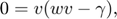
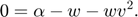
The first equilibrium is
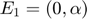
and always exists.
The first equation gives that
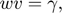
which is bigger than zero by assumption. This implies that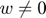
. Hence,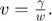
Plugging this into the second equation yields that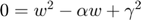
. Solving this quadratic equation gives two other equilibria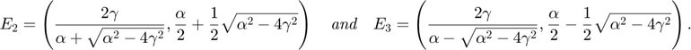
It follows from
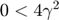
that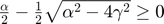
.The equilibria
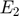
and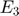
exist iff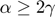
because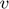
and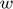
must be real. This means that only if the rainfall rate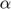
is at least twice as big as the death rate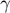
, then we have all three homogeneous equilibria. Otherwise, we have only the equilibrium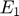
. This supports statements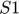
and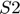
.Question 2
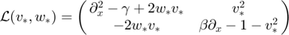
Question 3
Plugging in the vegetative equilibrium gives
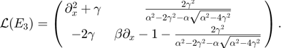
Notice that
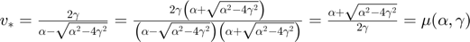
.Hence, the ansatz
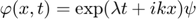
gives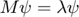
with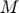
as in Assignment 3. The matrix has the eigenvalues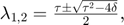
where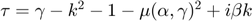
is the trace of and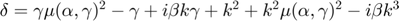
is the determinant of .Question 4
I expected the eigenvalues to be complex conjugates. It is not the case, as it can be seen in the plot below, because the characteristic polynomial of the matrix does not have real coefficients. This shows that a matrix with complex entries does not necessarily have complex conjugate pairs of eigenvalues.
The plot below provides a numerical evidence that the real parts of both eigenvalues for the given parameters are negative. Hence, the vegetative equilibrium is linearly stable.
% Trace, determinant, and eigenvalues function handles mu = @(a,g) (a + sqrt(a^2 - 4*g^2))/(2*g); tau = @(a,b,g,k) g - k.^2 - 1 - mu(a,g)^2 + 1i*b*k; delta = @(a,b,g,k) g*mu(a,g)^2 - g + 1i*b*g*k + k.^2 + mu(a,g)^2*k.^2 - 1i*b*k.^3; lambda1 = @(a,b,g,k) (tau(a,b,g,k)-sqrt(tau(a,b,g,k).^2 - 4*delta(a,b,g,k)))/2; lambda2 = @(a,b,g,k) (tau(a,b,g,k)+sqrt(tau(a,b,g,k).^2 - 4*delta(a,b,g,k)))/2; rel1 = @(a,b,g,k) real(lambda1(a,b,g,k)); rel2 = @(a,b,g,k) real(lambda2(a,b,g,k)); imag1 = @(a,b,g,k) imag(lambda1(a,b,g,k)); imag2 = @(a,b,g,k) imag(lambda2(a,b,g,k)); % Set parameters a = 8; b = 20; g = 2; % Continuous variable k k = linspace(-2,2,1000); % Plot dispersion relation (with inset around k=0) figure, hold on; plot(k,rel1(a,b,g,k),'DisplayName','Re \lambda_1'); plot(k,rel2(a,b,g,k),'DisplayName','Re \lambda_2'); plot(k,imag1(a,b,g,k),'DisplayName','Im \lambda_1'); plot(k,imag2(a,b,g,k),'DisplayName','Im \lambda_2'); hold off; grid on; ylim([-15 5]); xlabel('k'); lgd = legend; lgd.Location = 'northoutside'; lgd.NumColumns = 3; drawnow;
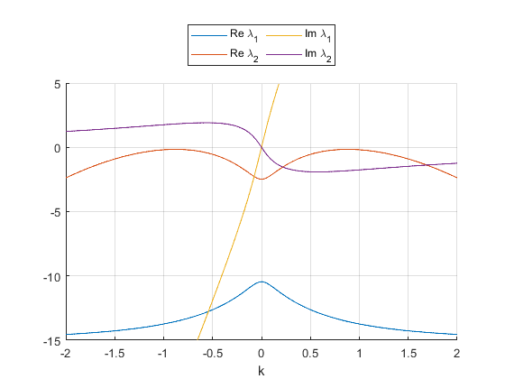
Question 5
We can see in the plot below that for
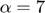
, there exist perturbations for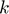
such that the real part of one of the corresponding eigenvalues is positive. Such system is unstable and will exhibit patterns. The plot for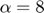
contains only eigenvalues with negative real parts. Then the system is stable and does not exhibit patterns for any perturbation. The plot provides numerical evidence that there is a critical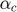
between 7 and 8 changing the stability of the vegetative equilibrium and causing bifurcation.This plot provides numerical evidence that the bifurcation is neither Turing (there is no k s.t. both real and imaginary parts of the eigenvalues are zero) not Hopf (at k=0, the eigenvalues are not purely imaginary). However, we can predict from Lecture notes 3 Case 4, that the pattern is a travelling wave because of the similarity of plots. This coincides with the expected pattern of a wave from the Turing bifurcation.
b = 20; g = 2; figure, hold on; for a = 7: 0.2: 8 plot(k,rel1(a,b,g,k)); plot(k,rel2(a,b,g,k)); plot(k,imag1(a,b,g,k)); plot(k,imag2(a,b,g,k)); end hold off; grid on; ylim([-15 5]); xlabel('k'); drawnow;
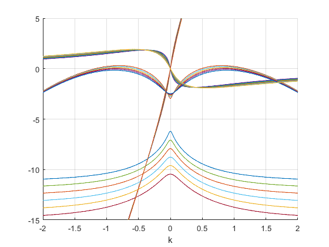
Question 6
The plot shows that the concentration of vegetation forms a (travelling) wave pattern over time for the given parameters. This coincides with the suggested wave in Question 5. This wave pattern means that the vegetation concentration at a certain position is expected to oscillate as the time passes.
% Set parameters p = [7 20 2]; L = 15.7; % Instantiating periodic differentiation matrix nx = 1500; [x,Dx,Dxx] = PeriodicDiffMat([-L,L],nx); % Initial condition (steady state + perburbation) e = ones(size(x)); v0 = 4/(7 - sqrt(33)); w0 = 7/2 - sqrt(33)/2; z0 = [v0*e; w0*e]; z0 = z0 + [cos(4*pi/L*x); e]; % Time step rhs = @(t,z) Schnakenberg(z,p,Dx,Dxx); jac = @(t,z) SchnakenbergJacobian(z,p,Dx,Dxx); opts = odeset('Jacobian',jac); tSpan = 0:0.1:300; % tSpan = [0:0.1:50]; [t,ZHist] = ode15s(rhs,tSpan,z0,opts); % Space-time plot PlotHistory(x,t,ZHist,p,[]);
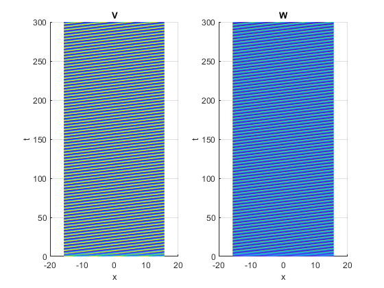